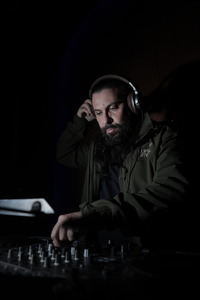
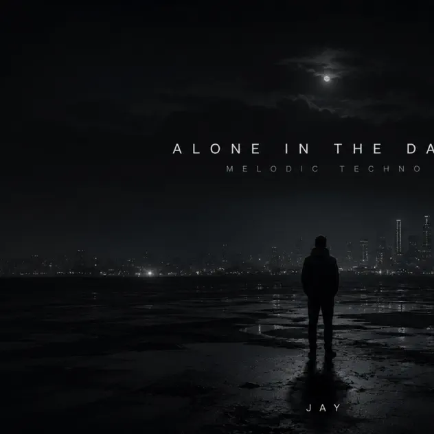
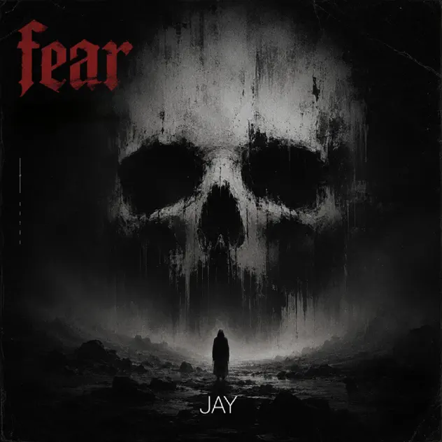

Sans toi
Jay Massih feat. Stephanie Fikany
Listen +Close −
Choose your platform
Sans toi
Jay Massih feat. Stephanie Fikany
Released 3 October 2026
Record label: Jay Massih
DJ / drummer / music producer
Based in Dubai, UAE
Musician first.
Always in the groove.
Rooted in musicianship.
Music that moves with the room.

Jay Massih, whose full professional name is Jihad Al Massih, is a DJ, drummer and music producer based in Dubai. Raised around music and musicians in Lebanon, he developed his ear through tape collections, mentorship and years of live performance.
His approach to DJing begins with musicianship: understanding rhythm, harmony and the relationship between songs. His sets are built around seamless transitions and a feel for the people in front of him.
Lebanon · UAE · Bahrain · Qatar · Ghana · Jordan · Turkey · USA · Mexico · Italy
02 / Latest tracks
Scroll to explore. Choose a track to find your platform.
Jay Massih feat. Stephanie Fikany
Choose your platform
Jay Massih feat. Stephanie Fikany
Released 3 October 2026
Record label: Jay Massih

Jay Massih
Choose your platform
Jay Massih · 2026

Jay Massih
Choose your platform
Jay Massih · 2026
03 / Experience
05 / Get in touch
For a night behind the decks,
a live set or a studio collaboration.